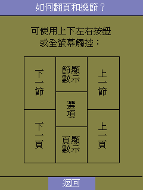
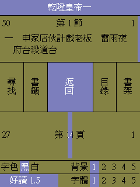

|
|
|
|
|
|
好讀 1.6 SONY CLIE 版 快速上手 周劍輝
首次開啟好讀，會進入首頁：我的書架。書架上會顯示您已安裝的書的書名。好讀因要支援章節的觀念，格式有些特別，因而僅能用來閱讀本網站所提供之好讀書檔，或由本網站所提供之 好讀轉檔程式 mPDB 所轉出來之好讀書檔。
接下來，點選任一書名，就會跳至該書的第一頁。因為 PDA 的螢幕比較小，好讀的書頁是採全螢幕顯示，乾乾淨淨，沒有任何不必要之按鈕或工具列。可是，那要怎麼翻頁呢？最直覺的方法就是去按 PDA 上的上、下按鈕。嗯，好像可以，書頁看來也頂舒服的 ...
再次開啟好讀，會直接進入上回您閱讀的那一頁，這是為了要方便您繼續閱讀，不必找半天。可是，這本書我已經看完了，或不想再看了，我要如何回到我的書架呢？我要怎麼才能選擇另外一本書來看呢？不是所有軟體都應該有功能選項及設定的功能嗎？

是的，好讀當然也有。您按螢幕的正中央，就可切換至好讀的功能選項頁。嗯，好像沒錯，也蠻直覺的 ... 可以回到書架、看章節目錄、加書籤、也可尋找、改顏色、改字體等等 ... 應該沒什麼問題了 ...
比較值得一提的是，嘿！好讀既然號稱有章節，那我要怎麼跳至下一章，或上一章呢？這個問題，當初設計時，我們也想了半天，最後想到何不充分利用 PDA 之全螢幕觸控功能 ... 所以，好讀是將螢幕分成上下兩塊來觸控，上面是章，下面是頁。
每一塊再等分為三：按螢幕的右下角是上一頁，按左下角是下一頁，按中下則會顯示頁數。同理，按螢幕的右上角是上一章，按左上角是下一章，按中上則會顯示章數。嗯，好像蠻簡單的 ...
如何判斷目前的閱讀位置？

實體書拿在手上翻頁，很容易知道一本書看了多少，還要看多久。但也因此有些又重又厚的書，翻了幾頁，自量體力不足，時間不夠，就不想看了。最可憫的是，年事漸長，不得不為家庭事業打拼，不但沒有什麼時間可看書，而且可看、想看的書也越來越少，有時候是不是有不知為誰而活的感覺 ... 想想幼時那無憂無慮埋首雜書中的日子，感覺有多好！PDA 也許是成人的最佳禮物。若沒有人送，就自己買一個吧。
在PDA 上看書，手上的重量是一樣的，若裝上幾百本書，隨時隨地，隨便看看，倒是比較有可能多看一些雜書，尤其是書架上沒有的書，或是有些不方便放在書架上展示的書。但不論書有多厚多重，眼下的 PDA 螢幕就是那麼一頁，要怎麼知道目前讀到那裏了？
有些閱讀軟體使用百分比，或顯示頁數，我們覺得那太浪費 PDA 螢幕的空間及眼力，因而好讀提供三種不同的方法：
|
1)
|
在螢幕的上緣，有一條紅色的短線，代表目前正在閱讀的章節。若是第一章，紅線在最左側，然後隨章向右移，當紅線在最右側時，就是最後一章了。如此，您可以很容易判斷目前大概讀到那裏了。紅線的長度，和總章數成反比：若有十章，紅線的長度是螢幕寬度的十分之一；若有二十章，紅線的長度是螢幕寬度的二十分之一。同理，在螢幕的下緣，也有一條紅色的短線，代表目前正在閱讀本章的頁數位置；若本章有一百頁，紅線的長度是螢幕寬度的一百分之一。使用上下緣的紅色的短線的方法，既不佔空間，也無不必要的數字來吸引眼力。
| | |
2)
|
若要知道正確的章數，按螢幕的上緣中間處，就會出現像 5/10 的反白顯示，代表總共有十章，目前是第五章；再按一次，顯示就消失了。同理，按螢幕的下緣中間處，就會出現像 25/100 的反白顯示，代表本章總共有一百頁，目前是第廿五頁；再按一次，顯示就消失了。
| | |
3)
|
按螢幕的正中央，切換至好讀的功能選項頁。這一頁上面，也有章頁的資訊。
|
如何快速選章節？
|
1)
|
按螢幕的右上角是下一章，按左上角是上一章。
| | |
2)
|
按螢幕的正中央，切換至好讀的功能選項頁。再按 [目錄]，就可以選章節。
| | |
3)
|
按螢幕的正中央，切換至好讀的功能選項頁。此頁在 [返回] 按鈕之上面是章節資料區，可以用筆點住，左右滑動；滑動時，章節數會變；當筆離開螢幕時，就會跳至那一章。
|
如何快速選頁？
|
1)
|
按螢幕的右下角是下一頁，按左下角是上一頁。
| | |
2)
|
按螢幕的正中央，切換至好讀的功能選項頁。此頁在 [返回] 按鈕之下面是頁數資料區，可以用筆點住，左右滑動；滑動時，頁數會變；當筆離開螢幕時，就會跳至那一頁。
|
我的書架
我的書架分主書架及 1 2 3 4 5 6 7 8 9 九個子書架。
主書架是主機記憶體。九個子書架是記憶卡上的目錄。因 Palm 作業系統無類似 PC 之檔案系統，
您可將書先放在主書架上，再用書架上的 [移至] 功能，搬動書檔至子書架上。
如何選架？
點選 [主]，是主書架上的書。
點選 [d]，是主書架之子目錄 /d 中的書，d 是 1 至 9。
相關說明
1) 快速上手(本頁)
2) 記憶卡的使用
3) 好讀的特性
回好讀 SONY CLIE 版主頁
|
|
|
|
|
|
|
|
| 搜尋好讀 |
|
好讀第17年了。
有好讀真好，有你也真好。但不知遍及各地的你，究竟有多少。若你從未或很久沒贊助過好讀，請按這裡，贊助好讀美金或人民幣十元，讓我知道你存在。
11/25香港 Dennis C
幾年前由朋友介紹得悉好讀，多年來在旅途中它都帶給我很多樂趣。香港地方狹小，不少書都因地方問題而送人或丟棄，好讀卻帶給了我很多閲讀的方便、亦節省了儲存的位置。衷心多謝各位工作仝人！
11/19 美國紐約 June
發現好讀幾年了，但現在才發現這好讀留言板。抱歉呢，理應更早道謝。身在海外，要看一本中文書不是易事。書店售書種類少，價錢高；圖書館借書種類更少。幸好發現好讀網，可以一解書癮。衷心感謝所有有心人上載和校對。
11/17 大陸 Shirley
偶然發現好讀網這塊寶地真的很驚訝，網絡上有這樣安靜舒適的地方可以閱讀電子書，對我這種資金短缺的學生真的很意外很開心！
11/16 香港 chair chun wai
因為買了Kindle的緣故，所以才發現"好讀"這個地方。感謝"好讀"一直的更新和提供書本給大家。感謝感謝
11/15 香港 mike chan
我認識好讀是因爲kindle。那時中學買了kindle，需要找找電子書，因此在網上發現了好讀。對於繁體字kindle用家，這是個大福音！
11/13 大陸 BerthaR
今天因為Kindle的緣故找書，才發現好讀這個地方。感覺是一方淨土，公益地為書友們獲取知識省下了不少財力，節省了大家的時間：）目前我只是個高中生，提供的也只有十塊錢而已啦。十七年的好讀真是令人敬佩！希望你們知道我的感謝，還有知道更多人的感謝！
11/9 香港 MJ
從小喜愛看書，看書人也許都知道要管理保存書本是不容易的（尤其香港的地方空間更有限）。今年開始嘗試電子書，看看能否接受。因為好讀網的海量書本，小弟所喜愛的黃易＋衛斯理，還有準備開始看的金庸也不用愁了。感謝好讀！
>> 更多
|
|
|